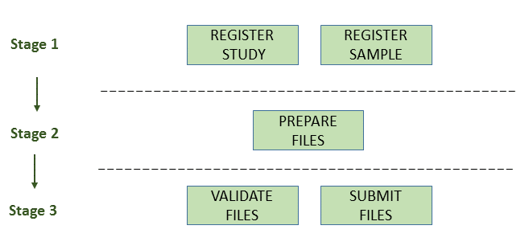
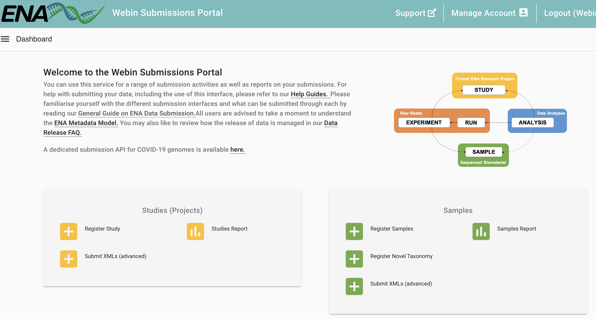

Introduction
European Nucleotide Archive (ENA) 是一个由欧洲分子生物学实验室 (EMBL) 欧洲生物信息学研究所 (EBI) 维护的公共数据库。ENA 收集、存储和提供核酸序列数据，是全球生物学和生物信息学研究的重要资源之一。以下是 ENA 的几个关键点：
-
数据收集和存储：ENA 接收并存储来自全球各地的核酸序列数据。这些数据包括DNA和RNA的序列，以及相关的元数据，如序列的来源、生物学特征和实验信息。
-
数据访问：ENA 提供公开访问接口，允许研究人员和公众免费下载和检索数据。用户可以通过网页界面、编程接口 (API) 和批量下载工具访问数据。
-
数据整合：ENA 与其他主要的生物序列数据库（如美国的GenBank和日本的DDBJ）合作，确保数据在全球范围内的整合和共享。这种合作被称为国际核酸序列数据库协作 (INSDC)。
-
数据提交：研究人员可以向 ENA 提交他们的核酸序列数据。ENA 提供了详细的指南和工具，帮助研究人员提交数据并确保数据的质量和一致性。
-
用途广泛：ENA 中的数据被广泛用于各种生物学研究领域，包括基因组学、转录组学、宏基因组学和进化生物学等。
数据提交
由于项目需要，我们要把测序原始数据上传至ENA数据库。在此以双端fastq测序文件的提交流程为例，讲解具体步骤。
官方教程： https://ena-docs.readthedocs.io/en/latest/submit/general-guide.html
在 European Nucleotide Archive (ENA) 提交数据时，有三种不同的提交方式，每种方式适用于不同类型的数据提交。 根据你的需求，可能需要使用一种或多种提交方式：
-
交互式提交 (Interactive Submissions)：
- 方法：通过在浏览器中直接填写网页表单，并下载可以离线填写的模板电子表格，然后将其上传到 ENA。
- 适用场景：这是最易于访问的提交方式，适合大多数用户，尤其是那些不熟悉命令行或编程的用户。
- 优点：操作简单，界面友好，适合初次提交或数据量较少的提交者。
-
命令行提交 (Command Line Submissions)：
- 方法：使用 ENA 的专用程序 Webin-CLI 进行提交。这个工具可以在提交之前完全验证你的数据，确保数据的准确性和完整性。
- 适用场景：适合需要高控制力和数据验证的用户，特别是有一定技术背景的用户。
- 优点：提供最大化的控制和数据验证，适合批量提交和大规模数据。
-
编程提交 (Programmatic Submissions)：
- 方法：通过准备 XML 文档来完成提交，可以使用 cURL 程序或 Webin Portal 将数据发送到 ENA。
- 适用场景：适合需要自动化提交的用户，尤其是那些有编程能力并且需要频繁提交数据的用户。
- 优点：支持自动化和高效的数据提交流程，适合大规模数据和高频率的提交需求。
我们这里使用的是1+2方法，这样是最通用，灵活且方便的流程。 使用网页注册project和sample，再使用Webin-CLI提交数据。
Install Webin-CLI
使用 Webin-CLI 提交数据到 European Nucleotide Archive (ENA) 需要按以下步骤进行。确保你已经安装了 Java 1.8 或更高版本，并下载了最新版本的 Webin-CLI。
- 步骤 1: 安装 Java
如果你还没有安装 Java，请从以下链接下载并安装 Java 1.8 或更新版本： 下载 Java
检查版本：
|
|
- 步骤 2: 下载 Webin-CLI
从 GitHub 下载最新版本的 Webin-CLI： 下载 Webin-CLI
在终端或命令行中使用 java 命令运行 Webin-CLI。
运行 Webin-CLI 并显示帮助信息：
|
|
-context： 提交类型：- `-context genome
- `-context transcriptome
- `-context sequence
- `-context reads
-userName：Webin 提交帐户名称。-password：Webin 提交帐户密码。-centerName：提交者的中心名称（对于经纪商账户是强制性的）。-manifest：清单文件名。-outputDir：输出文件的目录。-inputDir：清单文件中声明的文件的输入目录。-validate：验证清单文件中定义的文件。-submit：验证并提交清单文件中定义的文件。-test：使用 Webin 测试服务而不是生产服务。请注意， Webin 上传区域在测试和生产服务之间共享，并且该测试提交 文件将不会存档。-ascp：使用 Aspera Cli 而不是 FTP 文件传输（如果可用）。Aspera应该安装，可执行文件“ascp”的路径应该在 PATH 变量中。-version：打印程序的版本号并存在。-help：有关不同选项的详细信息。
Submission
准备好软件后，我们就可以开始提交流程了：
Stage 1: Pre-register Study and Sample
首先进入官网The European Bioinformatics Institute < EMBL-EBI，这里一般实验室有自己的账号，登陆。
我们会进入这个页面：
- 注册study
按要求填写，保存好我们的project id文件。
- 注册sample
这一步要下载一个checklist（tsv），用excel打开按要求填好每一个sample的信息，注意不要删掉本来的内容。比如：
- taxid：可在这里查询https://www.ebi.ac.uk/ena/browser/view/408169?show=tax-tree。比如我们是环境样本，空气就是Taxon: 655179
- scientific_name：air metagenome
- sample_alias, sample_title, sample_description, project name
- 有些是有填写格式的，比如时间，经纬度要注意
都填完以后还是把这个tsv上传回去，提交好后就有每个sample的ACCESSION了。
Stage 2: Prepare the Files
原始fastq文件需要进行压缩(.fq.gz):
|
|
准备manifest文件
作为提交的一部分，每个刚刚注册的Sample（一个单端测序文件，或一对双端测序文件）都必须使用一个清单文件描述。
manifest文件使用Webin-CLI的-manifest <filename>参数指定，每个manifest文件需包含以下内容：
- 通用实验信息
- Study accession or unique name (alias)
- Sample accession or unique name (alias)
- Experiment name
- Sequencing platform
- Sequencing instrument
- Library name (optional)
- Library source
- Library selection
- Library strategy
- Free text library description (optional)
- Insert size for paired reads (optional)
- 测序文件，以下的一项
- BAM file
- CRAM file
- Single Fastq file
- Paired Fastq files
- Multi-fastq files
单独填写每一个样本的manifest文件比较麻烦，可以用一段简单的R脚本帮助编写：
首先，根据我们之前注册时已经得到的信息整理出一个excel（列名不要改变，FASTQ这列如果是双端就用; 隔开）：
|
|
这样会在manifest文件夹下生成每一个样本的manifest文件，内容如下：
|
|
Stage 3: Validate and Submit Files
终于到了上传的这一步了，ENA建议在上传前先用-validate验证清单文件中定义的文件（只验证不提交）。
我们拿一个样本试一试，没问题：
|
|
正式提交，用for循环提交每一个样本(-submit也会在提交前验证)：
|
|
上面那个命令validate可以执行并通过，但默认是ftp协议传输，如果你的提交没问题那就跳过下面ascp这部分：
-ascp 提交
我使用默认的ftp好像有点问题，进度条都没有，应该是我们服务器的问题。
那就试一下-ascp参数，但是我之前装好的ascp不能用了，好像是最近aspera改过一次：
|
|
没办法，重装，官网下载安装没用，应该是服务器配置不匹配。
只能试试conda，conda install -c hcc aspera-cli -y。
虽然很慢，但最后conda安装的可以用。
加上-ascp参数，大功告成，上传速度也非常快：
|
|
最后，我们可以回到官网页面：The European Bioinformatics Institute < EMBL-EBI。点击左侧的Dashboard，再点击Raw Reads里的Runs Report，就可以查看每一个样本提交状态了，没问题：